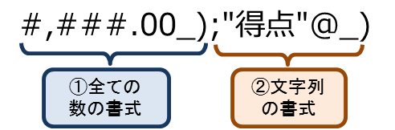
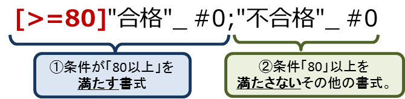
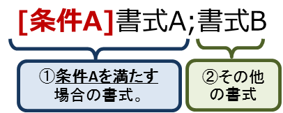

表示形式の構造¶
- 表示形式は、 最大4つ のセクションまで指定できます。
- セクションは、 セミコロン（;）で区切り ます。
- セクションの個数により、自動的に一致条件が変わります。
- 一致条件を直接指定することができます。
標準の構造について¶
- セクションが4つの場合、それぞれ順番に 「正の数」「負の数」「ゼロの値」「文字列」 に一致する書式となります。

セクションが4つの場合の例
- セクションが3つの場合、それぞれ順番に 「正の数」「負の数」「ゼロの値」」 に一致する書式となります。

セクションが3つの場合の例
- セクションが2つの場合、2つめのセクションに 記号「@」 を含むかどうかで変わります。
- 2つめのセクションに 記号「@」 を含まない場合、 「ゼロ以上の数（正の数 + ゼロの値）」「負の数」 に一致する書式となります。
- 2つめのセクションに 記号「@」 を含む場合、「全ての数」「文字列」 に一致する書式となります。
- 2つめのセクションに日時のフォーマットを指定することもできます。その場合、「日時」「文字列」 に一致する書式となります。

セクションが2つの場合の例（数値のフォーマット）

{kind=link}
セクションが2つの場合の例（文字列のフォーマット）

セクションが2つの場合の例（日時のフォーマット）
- セクションが1つの場合、それぞれ 「全ての数」「日時」「文字列」 に一致します。

セクションが1つの場合の例
任意の条件式（比較演算子）について¶
演算子を使用して任意の条件を割り当てることで、その条件が満たされた場合にのみ書式を適用することもできます。
- 条件式は、 [条件式] の形式で定義します。
- 条件式には演算子を用いて定義することができます。
- 条件式を記述しないセクションは、全ての条件に一致するため、最後のセクションに定義します。

{kind=link}
セクションが2つの任意の演算子の場合の例
- セクションが2つの場合、条件式を記述するセクションと条件式がないセクションを定義します。
- セクションが2つの場合は、必ず2つめのセクションには、条件式記述しないようにします。
- 2つめのセクションに条件式を記述した場合、条件を満たさない値が入力されたとき、Excel上は表示が不正になります。

{kind=link}
セクションが2つの任意の演算子の場合の形式

セクションが2つの任意の演算子の場合の形式（表示が不正になる場合）
- セクションが3つの場合
- 1つめと2つめのセクションに条件式を記述します。
- 最後の3つめのセクションは、条件式を記述しないようにして、1つめと2つめの条件に一致しない場合の書式を定義します。

セクションが3つの任意の演算子の場合の形式
- 記号「@」 を追加することで、数値、日時以外の文字列が入力された場合の書式を定義することもできます。
- 文字列の書式は省略可能であり、一般的にはあまり利用しないものです。
- 使用例として、入力されていないことを表現するために、文字「-」を使用するときなどに書式をそろえるために利用します。

文字列用の書式があるセクションが3つの任意の演算子の場合の形式の例
比較演算子の種類¶
様々な比較演算子を利用して条件式を定義することができます。
| 演算子 | 名称 | 名称（英字） | 使用例 | 結果 |
|---|---|---|---|---|
| = | 等しい | equal | [=2] | 2と等しい。 |
| <> | 等しくない | not equal | [<>2] | 2以外。 |
| > | 大きい | greater than | [>2] | 2より大きい。 |
| < | 小さい | less than | [<2] | 2より小さい。 |
| >= | 以上 | greater equal | [>=2] | 2以上。 |
| <= | 以下 | less equal | [<=2] | 2以下。 |